iMAP
Multi-mode campus navigation for UIUC: accessible routes, live space occupancy, dining, sports — and a weather mode that reroutes you indoors when it rains.
Campus tools are built for the average person
But the average person does not exist. UIUC has students with mobility needs, international students navigating in a second language, athletes looking for a court that is not already packed, commuters hunting parking between classes. Existing maps serve the majority and leave everyone else to piece information together.
You cross campus to the library or the gym after class and find every seat taken. There is no way to check before leaving.
Students with mobility needs verify elevators and accessible entrances manually — information that should be the default, not a special case.
Campus tools rarely offer real language support. For students still building fluency, that adds friction to every interaction.
Inclusivity — a campus map should work equally well for every person, regardless of ability, language, schedule or lifestyle.
Switch the mode, the map changes
Instead of designing for one persona, we built around six real contexts — each mapping to a mode. Mode-switching is the core interaction: the map keeps only what is relevant right now. The same campus, depending on what you need from it.
Elevators, accessible entrances, slope-friendly routes — primary, not secondary.
Libraries and quiet areas with live occupancy, so you know before you walk over.
Gyms, courts and fitness spaces with live busyness data.
Dining halls and cafés with hours, menu types and dietary filters.
Bike racks, scooter areas and car parking with real-time availability.
Performances, exhibitions and events surfaced in the map, not buried in a separate calendar.
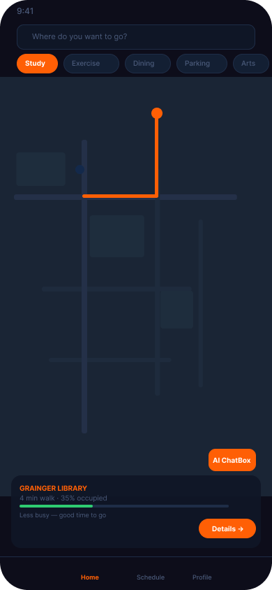
One map, six modes within reach
The home map carries the product: the map fills the screen, the mode bar stays pinned at the bottom, and search plus Mappy are always one tap away at the top. Live information — seats, courts, dining, weather — sits directly on the map as pins rather than behind a second page.
Eighteen screens, the whole flow
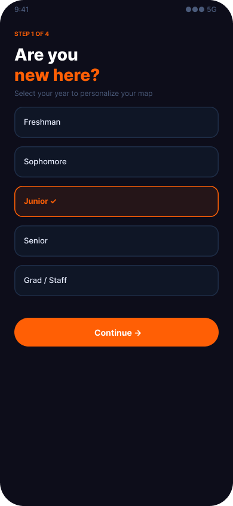
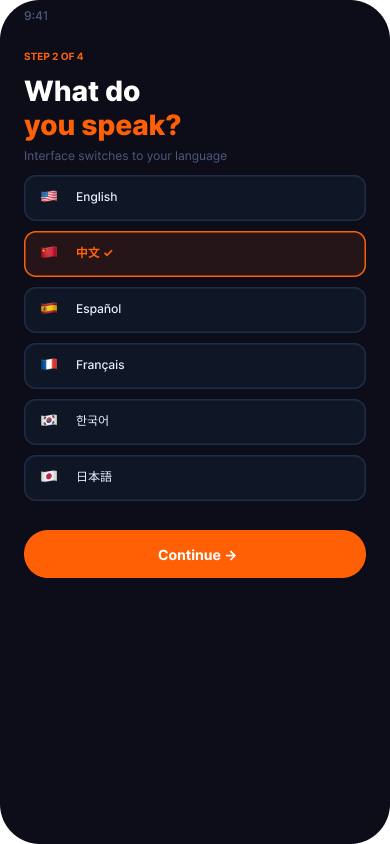
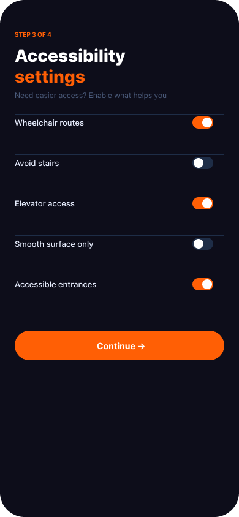
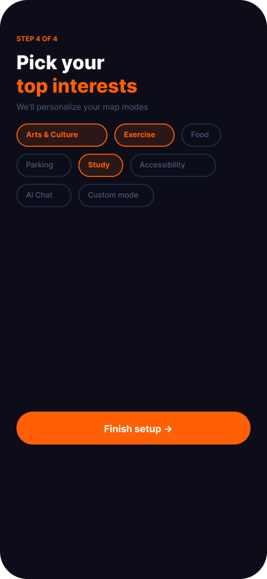
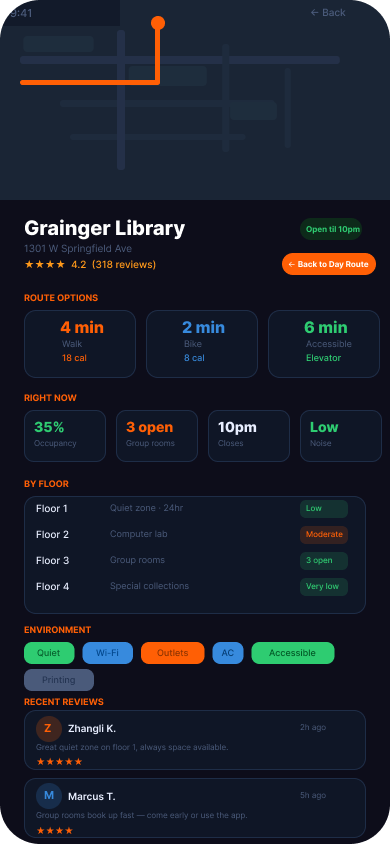
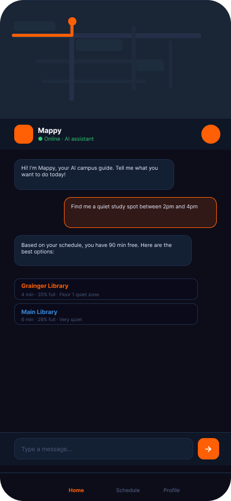
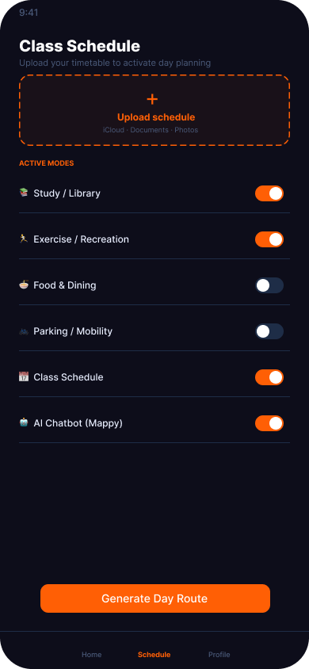
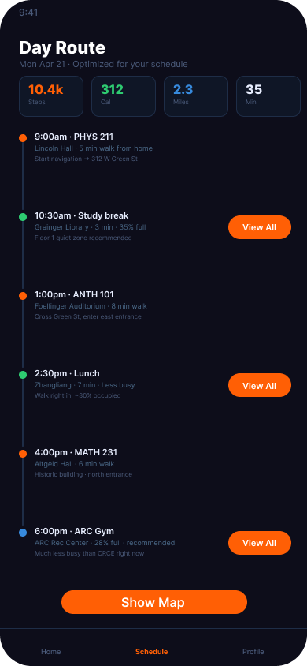
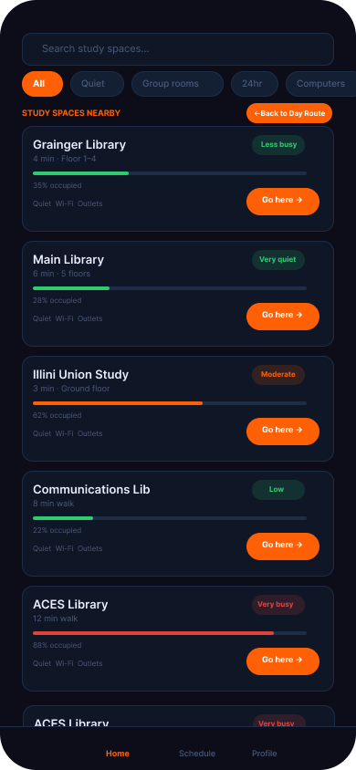
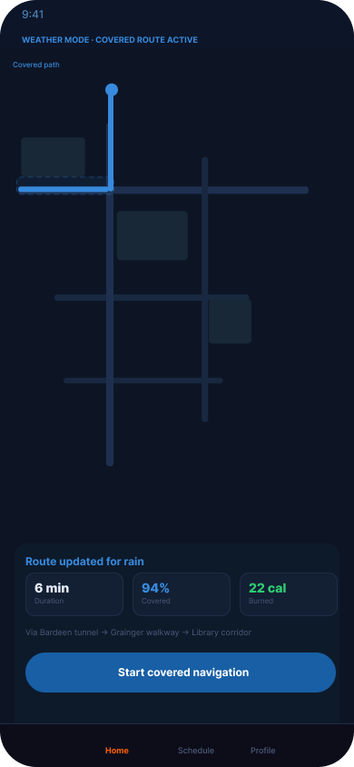
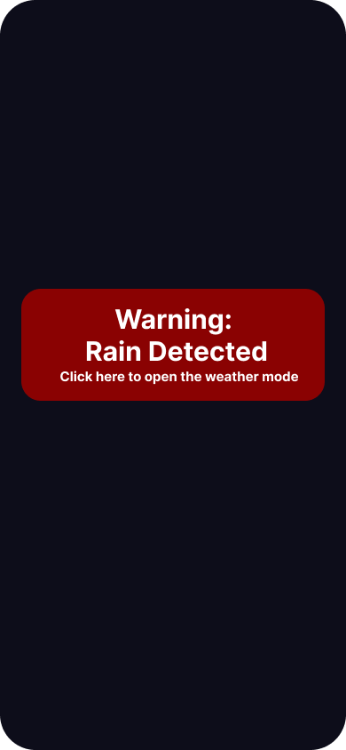
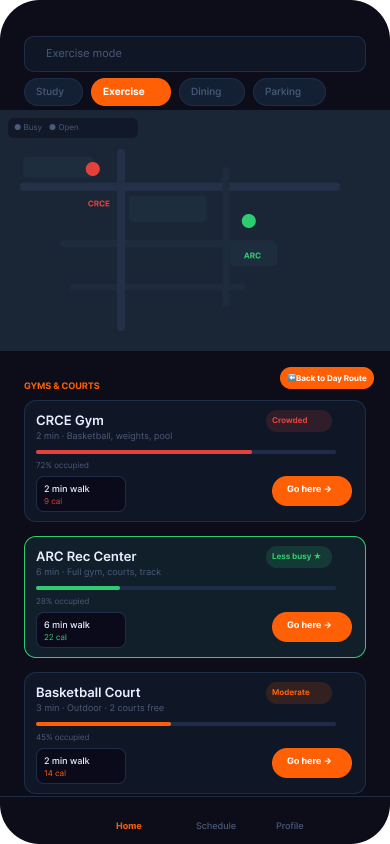
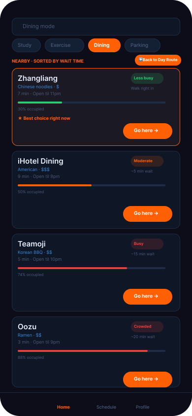
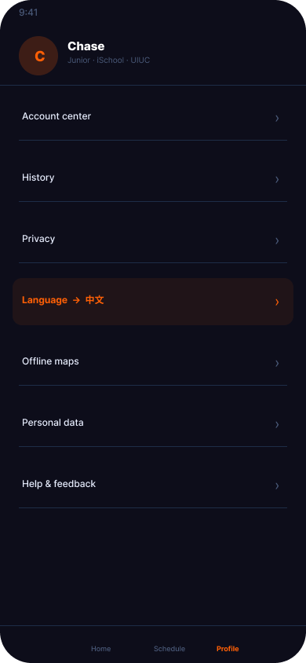
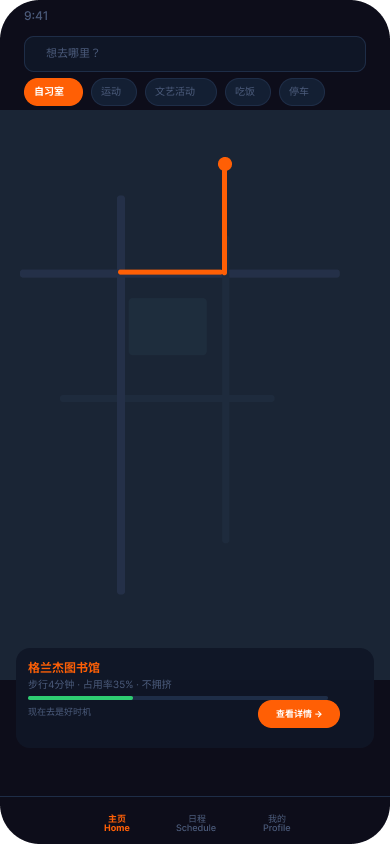
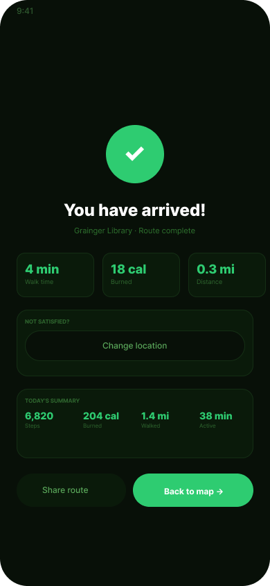
Four decisions shaped the final design
The app is used outdoors — direct sun, or low light in the evening. A dark background with high-contrast orange performs better in both than a light theme.
Rather than requiring people to know the right mode and filters up front, the AI assistant (Masey) lets them ask "where can I study near my next class?" and translates intent into mode plus location.
Upload your class schedule and the app plans the day — study spots and food between classes, so dead time becomes intentional time.
When it rains, routes switch to indoor and covered paths. It is the one feature that came from the weather in Champaign rather than from an interview.
Five classmates, a lot of hierarchy fixes
I built the personas, ran annotated walkthroughs to evaluate information hierarchy, then usability-tested with five peers and iterated the layouts. The final design meets WCAG accessibility needs and folds schedule integration and real-time availability into the main flow.